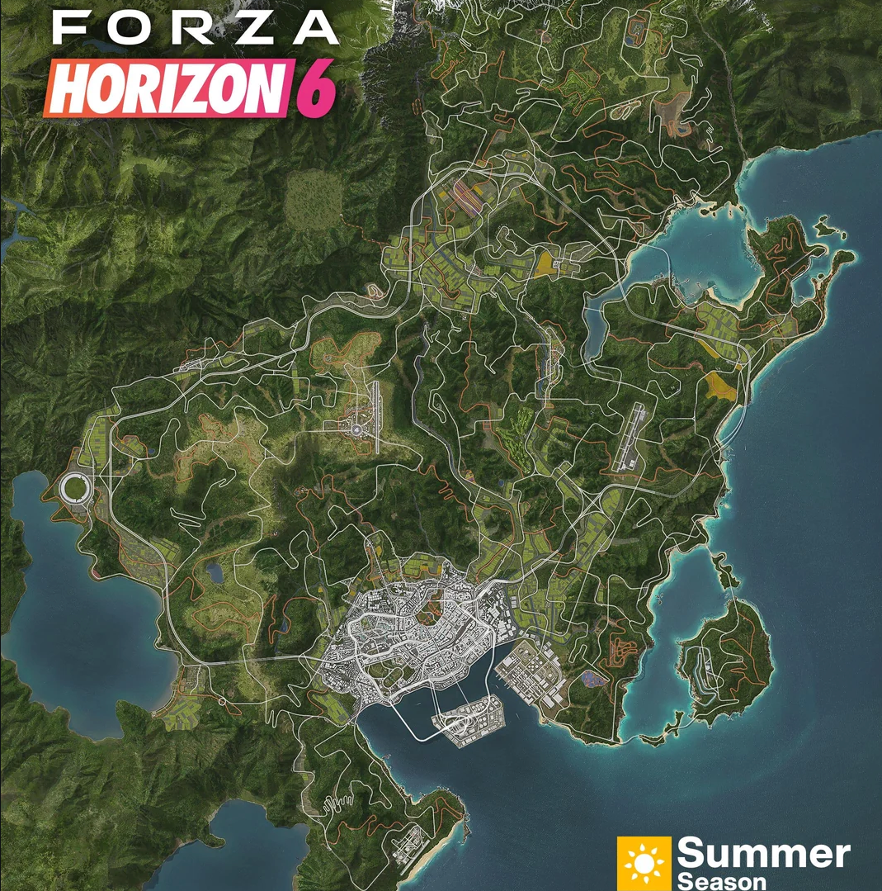

Full coverage of all collectible areas in Forza Horizon 6 Japan open world
Forza Horizon 6 Japan map contains a large number of hidden collectible elements, including speed bonus boards, fast travel boards, hidden barn find classic cars, special landmark views, and seasonal limited collectibles. Collecting all items is the core standard for 100% game completion, and can unlock exclusive titles, credits and hidden achievements.
Distributed in urban roads, highway straights and suburban avenues. Breaking these boards can permanently increase vehicle speed skill points and quickly level up player ranks.
Mainly hidden in remote mountain roads and rural areas. Each broken board reduces fast travel costs, and full collection achieves free fast travel across the entire map.
Scattered in hidden corners of scenic spots and track edges, providing a large amount of extra XP and in-game currency rewards.
Barn Finds are the most valuable hidden collectibles in FH6, providing rare classic vehicles that cannot be purchased in the garage. All barns are hidden in remote, off-the-beaten-path areas of the Japan map:
FH6 Japan map has dozens of exclusive scenic landmarks, including traditional Japanese shrines, torii gates, mountain waterfalls, coastal docks and neon night city landmarks. Visiting all landmarks unlocks the "Full Explorer" achievement.
With the switching of spring, summer, autumn and winter seasons, FH6 refreshes limited-time seasonal collectibles such as cherry blossom ornaments, summer seaside signs, autumn maple markers and winter snow sculptures. These time-limited items are necessary for full game completion.